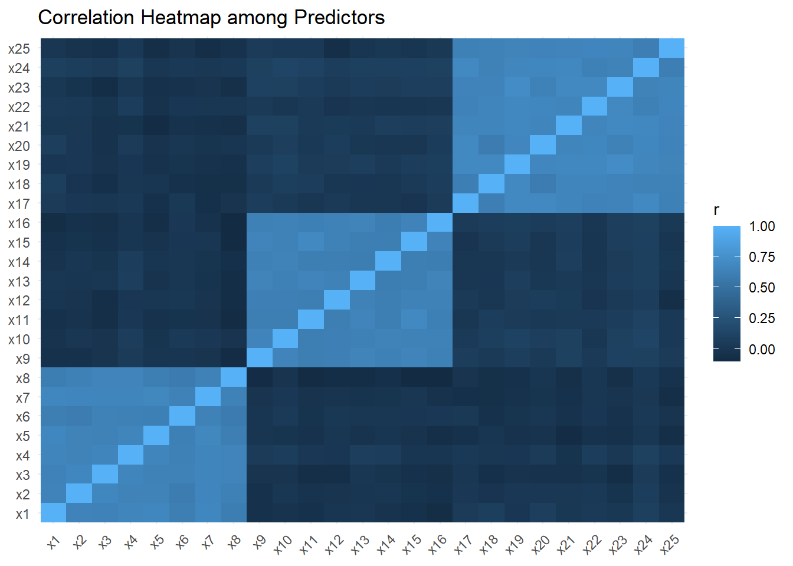
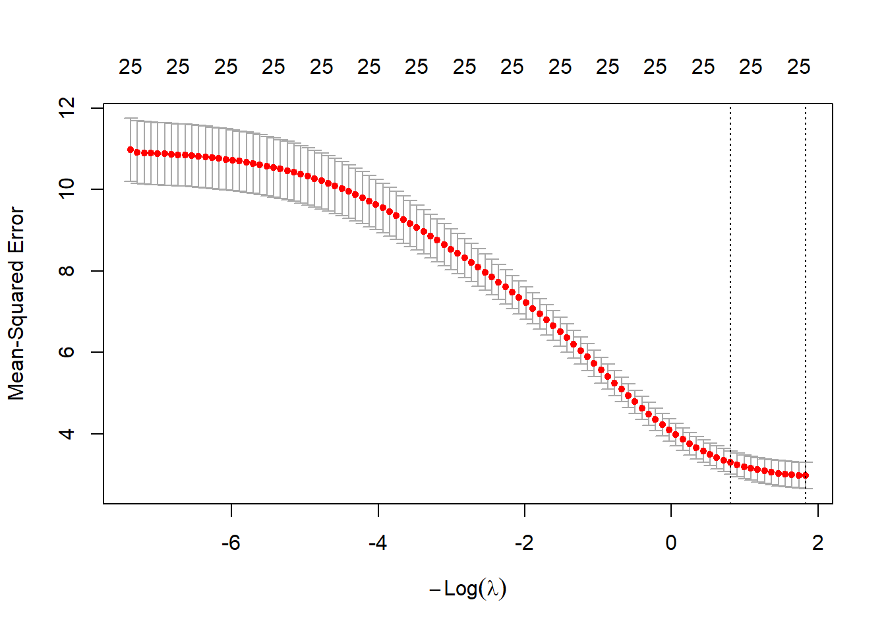
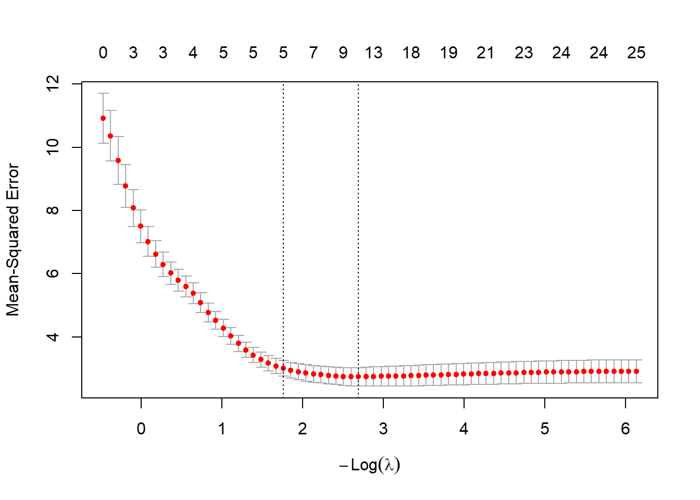
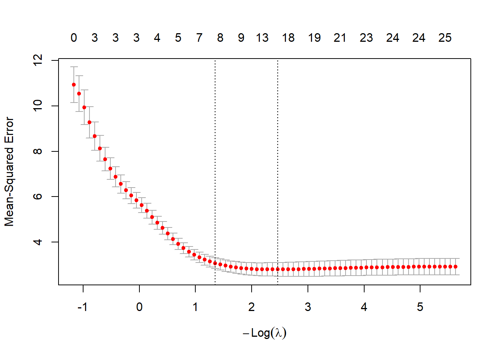
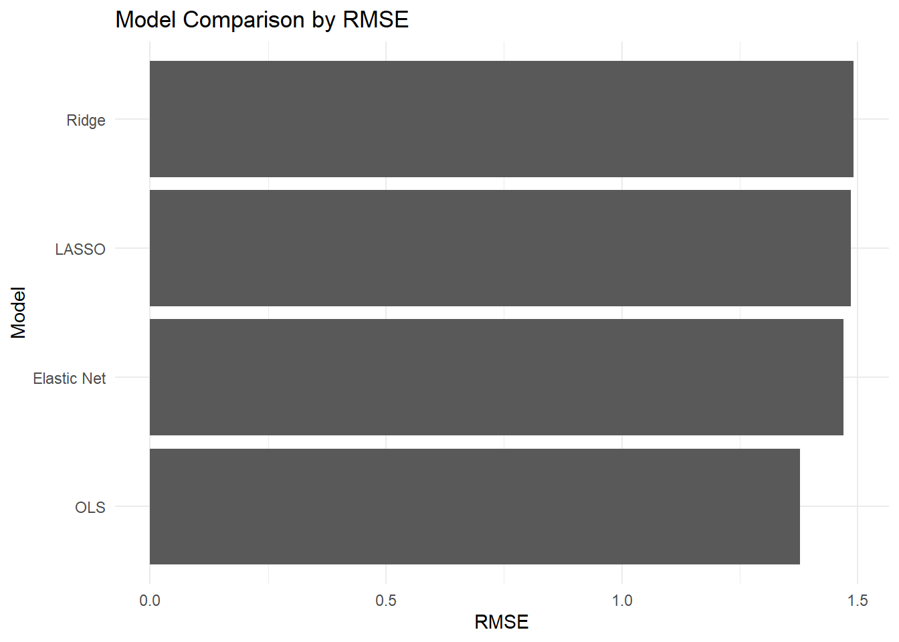
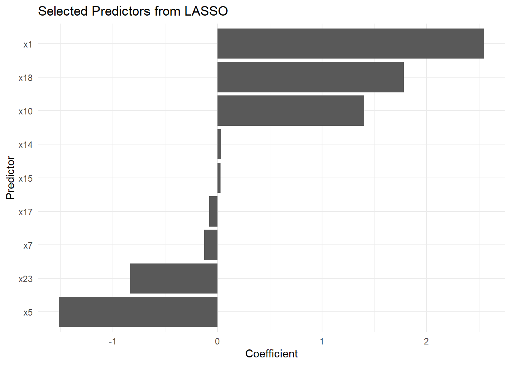
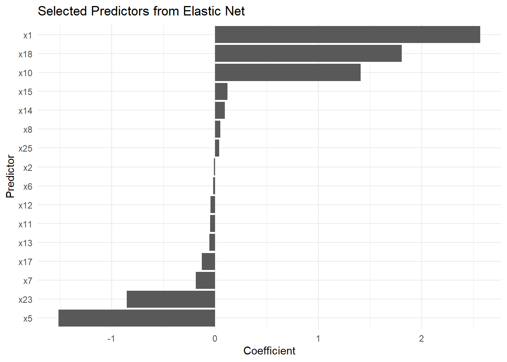

install.packages("tidyverse")
install.packages("readxl")
install.packages("janitor")
install.packages("glmnet")
install.packages("broom")
install.packages("gt")
install.packages("patchwork")Advanced 03. Hồi quy Điều chuẩn
Ridge, LASSO and Elastic Net Regression
Tổng quan bài học
TipKết quả học tập (Learning Outcomes)
Sau khi hoàn thành bài học này, học viên có thể:
- Hiểu vì sao hồi quy tuyến tính thông thường có thể gặp vấn đề khi có nhiều biến dự báo
- Hiểu đa cộng tuyến (Multicollinearity) và quá khớp mô hình (Overfitting)
- Hiểu hồi quy điều chuẩn (Regularized Regression)
- Phân biệt Ridge Regression, LASSO Regression và Elastic Net Regression
- Chuẩn bị dữ liệu dạng ma trận cho package
glmnet - Chạy Ridge Regression bằng R
- Chạy LASSO Regression bằng R
- Chạy Elastic Net Regression bằng R
- So sánh kết quả giữa ba mô hình
- Diễn giải hệ số và lựa chọn biến
- Viết kết quả hồi quy điều chuẩn theo hướng nghiên cứu và dự đoán
NoteLogic bài học (Module Logic)
Bài học này trả lời câu hỏi:
Khi có nhiều biến dự báo, các biến tương quan mạnh với nhau hoặc mục tiêu là dự đoán, ta có thể dùng mô hình hồi quy nào thay cho hồi quy tuyến tính thông thường?
Quy trình:
Many Predictors
↓
Multicollinearity / Overfitting
↓
Penalty
↓
Ridge / LASSO / Elastic Net
↓
Cross-validation
↓
Best Lambda
↓
Prediction and Interpretation1. Vì sao cần hồi quy điều chuẩn?
NoteKiến thức nền tảng (Knowledge Notes)
Là gì? (What?)
Hồi quy điều chuẩn (Regularized Regression) là nhóm mô hình hồi quy thêm một thành phần phạt (penalty) vào hàm mất mát để làm cho mô hình ổn định hơn.
Tại sao cần? (Why?)
Hồi quy tuyến tính thông thường (Ordinary Least Squares - OLS) có thể gặp vấn đề khi:
- Có quá nhiều biến dự báo
- Các biến dự báo tương quan mạnh với nhau
- Mô hình quá phức tạp
- Dữ liệu có nhiều nhiễu
- Mục tiêu chính là dự đoán
Khi nào dùng? (When?)
Dùng khi:
- Mục tiêu là prediction
- Có nhiều predictors
- Có nguy cơ overfitting
- Có multicollinearity
- Cần chọn biến quan trọng
- Muốn so sánh nhiều biến dự báo trong cùng một mô hình
Thực hiện thế nào? (How?)
Ta dùng package glmnet.
Ba kỹ thuật chính:
| Kỹ thuật | Mục tiêu chính |
|---|---|
| Ridge Regression | Giảm độ lớn hệ số |
| LASSO Regression | Chọn biến |
| Elastic Net Regression | Kết hợp Ridge và LASSO |
ImportantỨng dụng trong nghiên cứu (Research Application)
Hồi quy điều chuẩn phù hợp cho các bài nghiên cứu có mục tiêu dự đoán như:
- Dự đoán hiệu quả học tập
- Dự đoán mức độ sử dụng công nghệ
- Dự đoán sự hài lòng
- Dự đoán năng suất làm việc
- Dự đoán ý định hành vi
- Chọn các yếu tố dự báo quan trọng từ nhiều biến khảo sát
WarningSai lầm thường gặp (Common Mistakes)
Người học thường mắc lỗi:
- Dùng Ridge/LASSO như công cụ chứng minh nhân quả
- Không chuẩn hóa biến trước khi chạy mô hình
- Không dùng cross-validation
- Diễn giải hệ số giống hệt OLS
- Chỉ nhìn hệ số mà không xem mục tiêu prediction
- Nghĩ LASSO chọn biến nghĩa là biến đó chắc chắn có quan hệ nhân quả
2. Chuẩn bị dữ liệu
NoteKiến thức nền tảng (Knowledge Notes)
Dữ liệu sử dụng
data/advance/module7_advanced_data.xlsxSheet sử dụng:
03_Ridge_Lasso_ElasticSheet này gồm:
- Biến phụ thuộc liên tục (continuous outcome)
- Nhiều biến dự báo có tiền tố
x - Một số predictors có thể tương quan với nhau
Cài đặt package
Nạp package
library(tidyverse)
library(readxl)
library(janitor)
library(glmnet)
library(broom)
library(gt)
library(patchwork)Thiết lập đường dẫn dữ liệu
advanced_file <- if (file.exists("../data/advance/module7_advanced_data.xlsx")) {
"../data/advance/module7_advanced_data.xlsx"
} else if (file.exists("../data/advanced/module7_advanced_data.xlsx")) {
"../data/advanced/module7_advanced_data.xlsx"
} else if (file.exists("data/advance/module7_advanced_data.xlsx")) {
"data/advance/module7_advanced_data.xlsx"
} else {
"data/advanced/module7_advanced_data.xlsx"
}Nhập dữ liệu
reg_data <- read_excel(
advanced_file,
sheet = "03_Ridge_Lasso_Elastic"
) |>
clean_names()Kiểm tra dữ liệu
glimpse(reg_data)Rows: 350
Columns: 28
$ id <chr> "RL0001", "RL0002", "RL0003", "RL0004", "RL0005", "RL0006…
$ x1 <dbl> 1.087, -0.428, -0.402, 0.852, 1.138, -1.031, 0.622, 0.238…
$ x2 <dbl> -0.327, 0.491, 0.272, 0.460, 1.059, -0.449, 0.591, 0.351,…
$ x3 <dbl> 0.859, 0.940, 0.250, 0.856, 1.290, -0.478, 1.002, 0.804, …
$ x4 <dbl> -0.058, 0.434, 0.020, 0.056, 0.711, -2.213, 1.040, 0.045,…
$ x5 <dbl> -0.640, -0.936, 0.094, -0.489, 0.849, -1.153, 0.425, 0.55…
$ x6 <dbl> -0.017, -0.993, 0.603, 0.640, 0.741, -0.879, 0.453, 0.004…
$ x7 <dbl> 0.467, 0.332, -0.145, 0.621, 0.731, -1.510, 1.215, 1.208,…
$ x8 <dbl> 0.638, 0.149, -0.400, -0.057, 0.529, -2.632, 0.129, 2.416…
$ x9 <dbl> -2.189, -1.413, -0.404, -0.006, -0.442, 0.445, 1.181, -0.…
$ x10 <dbl> -1.900, -1.333, -1.014, -0.781, -1.071, -0.185, -0.653, 0…
$ x11 <dbl> -1.340, -0.798, -0.279, 0.218, -0.953, -0.121, -0.449, -0…
$ x12 <dbl> -1.676, -1.186, -0.263, 0.839, -0.945, 0.003, -0.756, -1.…
$ x13 <dbl> -0.769, -0.712, 0.652, 1.080, 0.109, 0.830, 0.332, -1.582…
$ x14 <dbl> -0.096, -1.939, -0.072, 0.674, -1.356, -0.262, 0.259, -0.…
$ x15 <dbl> -0.369, -0.853, 0.728, -0.641, -1.620, -0.826, -0.636, 0.…
$ x16 <dbl> -1.718, -1.305, -0.822, 1.300, -1.410, 0.902, -0.596, 0.2…
$ x17 <dbl> -0.567, -1.466, 0.224, -0.767, 1.005, 0.806, 0.412, 1.189…
$ x18 <dbl> -0.123, -1.096, -0.520, 0.129, 1.113, 0.419, -0.231, 1.20…
$ x19 <dbl> -0.579, -1.417, -0.403, -0.308, 0.324, 1.442, 0.289, 0.67…
$ x20 <dbl> -1.446, -1.308, 0.168, 0.552, 0.754, 1.165, -0.373, 0.372…
$ x21 <dbl> 0.157, -1.414, -0.009, -0.063, 1.002, 0.676, -0.391, 1.39…
$ x22 <dbl> -0.125, -1.936, 0.204, 0.492, -0.036, 0.488, 0.112, 0.656…
$ x23 <dbl> -0.383, -2.149, 0.015, 0.067, 2.027, 0.620, 0.568, 1.000,…
$ x24 <dbl> -1.316, -1.066, 0.452, 0.545, 0.299, 0.844, 0.099, 0.463,…
$ x25 <dbl> -0.352, -0.241, 0.059, 0.063, 1.642, 0.410, 0.304, 0.374,…
$ y_continuous <dbl> 2.906, 0.506, -0.476, -0.595, 0.954, -0.585, -2.656, 1.03…
$ y_binary <dbl> 0, 0, 0, 1, 1, 1, 1, 1, 0, 1, 1, 0, 0, 1, 1, 1, 0, 1, 0, …names(reg_data) [1] "id" "x1" "x2" "x3" "x4"
[6] "x5" "x6" "x7" "x8" "x9"
[11] "x10" "x11" "x12" "x13" "x14"
[16] "x15" "x16" "x17" "x18" "x19"
[21] "x20" "x21" "x22" "x23" "x24"
[26] "x25" "y_continuous" "y_binary" 3. Vấn đề của hồi quy OLS khi có nhiều predictors
TipKết quả học tập (Learning Outcomes)
Sau phần này, học viên có thể:
- Hiểu vì sao OLS có thể không ổn định
- Nhận diện multicollinearity
- Hiểu overfitting ở mức cơ bản
- Biết khi nào cần regularization
NoteKiến thức nền tảng (Knowledge Notes)
OLS là gì? (What is OLS?)
Hồi quy tuyến tính thông thường ước lượng hệ số bằng cách tối thiểu hóa tổng bình phương sai số.
Observed value - Predicted valueVấn đề là gì?
Khi có nhiều predictors hoặc predictors tương quan mạnh:
- Hệ số có thể rất lớn hoặc rất nhỏ bất thường
- Dấu của hệ số có thể không ổn định
- Mô hình phù hợp tốt trên dữ liệu huấn luyện nhưng dự đoán kém trên dữ liệu mới
- Standard errors có thể tăng
Overfitting là gì?
Overfitting xảy ra khi mô hình học cả pattern thật và nhiễu trong dữ liệu.
Multicollinearity là gì?
Multicollinearity xảy ra khi các predictors tương quan mạnh với nhau.
Chạy OLS cơ bản
ols_model <- lm(
y_continuous ~ .,
data = reg_data |>
select(y_continuous, starts_with("x"))
)
summary(ols_model)
Call:
lm(formula = y_continuous ~ ., data = select(reg_data, y_continuous,
starts_with("x")))
Residuals:
Min 1Q Median 3Q Max
-4.6462 -0.9351 0.0654 0.9484 4.3631
Coefficients:
Estimate Std. Error t value Pr(>|t|)
(Intercept) 0.020524 0.086865 0.236 0.8134
x1 2.667782 0.138939 19.201 < 2e-16 ***
x2 -0.059472 0.141331 -0.421 0.6742
x3 0.011823 0.148724 0.079 0.9367
x4 -0.025063 0.157584 -0.159 0.8737
x5 -1.674879 0.150995 -11.092 < 2e-16 ***
x6 -0.117797 0.133219 -0.884 0.3772
x7 -0.180738 0.153967 -1.174 0.2413
x8 0.158164 0.133823 1.182 0.2381
x9 -0.007998 0.143299 -0.056 0.9555
x10 1.433811 0.144042 9.954 < 2e-16 ***
x11 -0.179879 0.155622 -1.156 0.2486
x12 -0.155326 0.150878 -1.029 0.3040
x13 -0.103270 0.146902 -0.703 0.4826
x14 0.140802 0.135861 1.036 0.3008
x15 0.376705 0.148346 2.539 0.0116 *
x16 -0.089739 0.139416 -0.644 0.5202
x17 -0.264410 0.147376 -1.794 0.0737 .
x18 2.035887 0.148970 13.666 < 2e-16 ***
x19 -0.038229 0.154956 -0.247 0.8053
x20 0.050194 0.149702 0.335 0.7376
x21 -0.030477 0.143127 -0.213 0.8315
x22 -0.015784 0.147603 -0.107 0.9149
x23 -1.153388 0.139756 -8.253 3.95e-15 ***
x24 0.047915 0.151754 0.316 0.7524
x25 0.144794 0.133780 1.082 0.2799
---
Signif. codes: 0 '***' 0.001 '**' 0.01 '*' 0.05 '.' 0.1 ' ' 1
Residual standard error: 1.547 on 324 degrees of freedom
Multiple R-squared: 0.7835, Adjusted R-squared: 0.7668
F-statistic: 46.89 on 25 and 324 DF, p-value: < 2.2e-16Kiểm tra tương quan giữa predictors
predictor_corr <- reg_data |>
select(starts_with("x")) |>
cor(use = "pairwise.complete.obs")
predictor_corr[1:6, 1:6] x1 x2 x3 x4 x5 x6
x1 1.0000000 0.6507830 0.6444272 0.6636732 0.6817633 0.6125465
x2 0.6507830 1.0000000 0.6799637 0.6488052 0.6472545 0.5936274
x3 0.6444272 0.6799637 1.0000000 0.6690027 0.6405121 0.6383549
x4 0.6636732 0.6488052 0.6690027 1.0000000 0.6608682 0.6314603
x5 0.6817633 0.6472545 0.6405121 0.6608682 1.0000000 0.6215474
x6 0.6125465 0.5936274 0.6383549 0.6314603 0.6215474 1.0000000Correlation heatmap
corr_long <- as.data.frame(as.table(predictor_corr)) |>
rename(
variable_1 = Var1,
variable_2 = Var2,
correlation = Freq
)
ggplot(corr_long, aes(x = variable_1, y = variable_2, fill = correlation)) +
geom_tile() +
labs(
title = "Correlation Heatmap among Predictors",
x = NULL,
y = NULL,
fill = "r"
) +
theme_minimal() +
theme(
axis.text.x = element_text(angle = 45, hjust = 1)
)
ImportantQuyết định nghiên cứu (Research Decision)
Nếu predictors có tương quan cao hoặc số lượng predictors lớn, hãy cân nhắc:
- Ridge Regression
- LASSO Regression
- Elastic Net Regression
- Principal Component Regression
- Feature selection
4. Chuẩn bị dữ liệu cho glmnet
NoteKiến thức nền tảng (Knowledge Notes)
Là gì? (What?)
glmnet yêu cầu dữ liệu đầu vào ở dạng:
x = matrix of predictors
y = outcome vectorTại sao cần? (Why?)
Khác với lm(), glmnet() không dùng công thức dạng:
y ~ x1 + x2 + x3mà dùng matrix để chạy nhanh và ổn định hơn.
Khi nào dùng? (When?)
Mỗi khi chạy Ridge, LASSO hoặc Elastic Net bằng glmnet.
Tạo ma trận predictors và outcome
x <- reg_data |>
select(starts_with("x")) |>
as.matrix()
y <- reg_data$y_continuousKiểm tra kích thước
dim(x)[1] 350 25length(y)[1] 350Chia train-test đơn giản
set.seed(123)
train_id <- sample(
1:nrow(reg_data),
size = 0.7 * nrow(reg_data)
)
x_train <- x[train_id, ]
x_test <- x[-train_id, ]
y_train <- y[train_id]
y_test <- y[-train_id]
WarningSai lầm thường gặp (Common Mistakes)
Không nên chạy mô hình trên toàn bộ dữ liệu rồi đánh giá lại trên chính dữ liệu đó nếu mục tiêu là prediction.
Nên có:
- Train set
- Test set
- Cross-validation
5. Ridge Regression
TipKết quả học tập (Learning Outcomes)
Sau phần này, học viên có thể:
- Hiểu Ridge Regression
- Biết khi nào dùng Ridge
- Chạy Ridge bằng
glmnet - Diễn giải lambda
- Hiểu vì sao Ridge không loại biến
NoteKiến thức nền tảng (Knowledge Notes)
Là gì? (What?)
Ridge Regression là hồi quy điều chuẩn sử dụng L2 penalty.
Nó làm hệ số nhỏ lại nhưng thường không đưa hệ số về đúng 0.
Tại sao cần? (Why?)
Ridge hữu ích khi:
- Predictors tương quan mạnh
- Muốn giữ tất cả biến trong mô hình
- Cần mô hình ổn định hơn OLS
Khi nào dùng? (When?)
Dùng Ridge khi bạn không muốn loại bỏ biến, nhưng muốn giảm tác động của multicollinearity.
Thực hiện thế nào? (How?)
Trong glmnet:
alpha = 0Chạy Ridge với cross-validation
set.seed(123)
ridge_cv <- cv.glmnet(
x = x_train,
y = y_train,
alpha = 0,
standardize = TRUE
)
ridge_cv
Call: cv.glmnet(x = x_train, y = y_train, alpha = 0, standardize = TRUE)
Measure: Mean-Squared Error
Lambda Index Measure SE Nonzero
min 0.1603 100 2.969 0.3227 25
1se 0.4461 89 3.291 0.2869 25Lambda tốt nhất
ridge_cv$lambda.min[1] 0.1603282Vẽ cross-validation curve
plot(ridge_cv)
Hệ số Ridge
ridge_coef <- coef(
ridge_cv,
s = "lambda.min"
)
ridge_coef26 x 1 sparse Matrix of class "dgCMatrix"
lambda.min
(Intercept) 0.07803303
x1 2.51489640
x2 -0.07130123
x3 0.02557057
x4 -0.03209465
x5 -1.42839204
x6 -0.09796521
x7 -0.26262859
x8 0.20210733
x9 0.03823100
x10 1.35471113
x11 -0.18889294
x12 -0.18813879
x13 -0.12329743
x14 0.19547770
x15 0.27728196
x16 0.11043172
x17 -0.23494442
x18 1.78783517
x19 -0.02079947
x20 0.11229587
x21 0.03128219
x22 -0.10010566
x23 -0.87472058
x24 0.05826263
x25 0.12281619Dự đoán trên test set
ridge_pred <- predict(
ridge_cv,
newx = x_test,
s = "lambda.min"
)
ridge_rmse <- sqrt(mean((y_test - ridge_pred)^2))
ridge_rmse[1] 1.491218
ImportantDiễn giải kết quả (Interpretation)
Ridge Regression làm hệ số nhỏ lại để mô hình ổn định hơn.
Nếu nhiều predictors tương quan mạnh, Ridge thường hoạt động tốt hơn OLS cho mục tiêu prediction.
Tuy nhiên, Ridge không phải là phương pháp chọn biến vì nó thường giữ lại tất cả predictors.
WarningSai lầm thường gặp (Common Mistakes)
Không nên nói:
Ridge selected important variables.Vì Ridge chủ yếu shrink coefficients, không loại biến về 0.
6. LASSO Regression
TipKết quả học tập (Learning Outcomes)
Sau phần này, học viên có thể:
- Hiểu LASSO Regression
- Biết khi nào dùng LASSO
- Chạy LASSO bằng
glmnet - Xác định biến được chọn
- Diễn giải hệ số bằng cách thận trọng
NoteKiến thức nền tảng (Knowledge Notes)
Là gì? (What?)
LASSO Regression là hồi quy điều chuẩn sử dụng L1 penalty.
Điểm nổi bật của LASSO là có thể đưa một số hệ số về đúng 0.
Tại sao cần? (Why?)
LASSO hữu ích khi:
- Có nhiều predictors
- Muốn chọn biến quan trọng
- Muốn mô hình gọn hơn
- Mục tiêu là prediction và variable selection
Khi nào dùng? (When?)
Dùng LASSO khi bạn muốn mô hình tự động loại bớt predictors ít hữu ích.
Thực hiện thế nào? (How?)
Trong glmnet:
alpha = 1Chạy LASSO với cross-validation
set.seed(123)
lasso_cv <- cv.glmnet(
x = x_train,
y = y_train,
alpha = 1,
standardize = TRUE
)
lasso_cv
Call: cv.glmnet(x = x_train, y = y_train, alpha = 1, standardize = TRUE)
Measure: Mean-Squared Error
Lambda Index Measure SE Nonzero
min 0.06781 35 2.741 0.2912 9
1se 0.17191 25 3.008 0.2434 5Lambda tốt nhất
lasso_cv$lambda.min[1] 0.06780668Vẽ cross-validation curve
plot(lasso_cv)
Hệ số LASSO
lasso_coef <- coef(
lasso_cv,
s = "lambda.min"
)
lasso_coef26 x 1 sparse Matrix of class "dgCMatrix"
lambda.min
(Intercept) 0.09380480
x1 2.54720167
x2 .
x3 .
x4 .
x5 -1.51366925
x6 .
x7 -0.12875026
x8 .
x9 .
x10 1.40389884
x11 .
x12 .
x13 .
x14 0.03715354
x15 0.02864927
x16 .
x17 -0.08086184
x18 1.78220513
x19 .
x20 .
x21 .
x22 .
x23 -0.83456291
x24 .
x25 . Biến được chọn bởi LASSO
lasso_selected <- as.matrix(lasso_coef) |>
as.data.frame() |>
rownames_to_column("variable") |>
rename(coefficient = 2) |>
filter(
coefficient != 0,
variable != "(Intercept)"
) |>
arrange(desc(abs(coefficient)))
lasso_selectedDự đoán trên test set
lasso_pred <- predict(
lasso_cv,
newx = x_test,
s = "lambda.min"
)
lasso_rmse <- sqrt(mean((y_test - lasso_pred)^2))
lasso_rmse[1] 1.485575
ImportantDiễn giải kết quả (Interpretation)
Nếu một biến có hệ số khác 0 trong LASSO, biến đó được giữ lại trong mô hình tại mức lambda đã chọn.
Nếu hệ số bằng 0, biến đó bị loại khỏi mô hình.
Tuy nhiên, điều này không có nghĩa là biến bị loại hoàn toàn không quan trọng trong mọi bối cảnh nghiên cứu.
WarningSai lầm thường gặp (Common Mistakes)
Không nên diễn giải LASSO như bằng chứng nhân quả.
LASSO chọn biến tốt cho prediction, nhưng không tự chứng minh quan hệ nhân quả.
7. Elastic Net Regression
TipKết quả học tập (Learning Outcomes)
Sau phần này, học viên có thể:
- Hiểu Elastic Net Regression
- Biết vì sao Elastic Net kết hợp Ridge và LASSO
- Chạy Elastic Net bằng R
- So sánh Elastic Net với Ridge và LASSO
- Biết khi nào Elastic Net là lựa chọn phù hợp
NoteKiến thức nền tảng (Knowledge Notes)
Là gì? (What?)
Elastic Net Regression kết hợp L1 penalty của LASSO và L2 penalty của Ridge.
Tại sao cần? (Why?)
Elastic Net hữu ích khi:
- Có nhiều predictors
- Predictors tương quan mạnh
- Muốn vừa shrink coefficients vừa chọn biến
- LASSO có thể chọn quá ít biến trong nhóm predictors tương quan
Khi nào dùng? (When?)
Dùng Elastic Net khi bạn muốn cân bằng giữa Ridge và LASSO.
Thực hiện thế nào? (How?)
Trong glmnet, chọn alpha giữa 0 và 1:
alpha = 0.5Chạy Elastic Net
set.seed(123)
elastic_cv <- cv.glmnet(
x = x_train,
y = y_train,
alpha = 0.5,
standardize = TRUE
)
elastic_cv
Call: cv.glmnet(x = x_train, y = y_train, alpha = 0.5, standardize = TRUE)
Measure: Mean-Squared Error
Lambda Index Measure SE Nonzero
min 0.08517 40 2.792 0.3045 16
1se 0.26009 28 3.065 0.2413 7Lambda tốt nhất
elastic_cv$lambda.min[1] 0.08516915Vẽ cross-validation curve
plot(elastic_cv)
Hệ số Elastic Net
elastic_coef <- coef(
elastic_cv,
s = "lambda.min"
)
elastic_coef26 x 1 sparse Matrix of class "dgCMatrix"
lambda.min
(Intercept) 0.09049778
x1 2.56419585
x2 -0.01289082
x3 .
x4 .
x5 -1.51245707
x6 -0.01874800
x7 -0.18634695
x8 0.05222720
x9 .
x10 1.40866167
x11 -0.04922157
x12 -0.04471543
x13 -0.05423176
x14 0.09506762
x15 0.12095562
x16 .
x17 -0.12953549
x18 1.80432230
x19 .
x20 .
x21 .
x22 .
x23 -0.85487222
x24 .
x25 0.04131499Biến được giữ lại
elastic_selected <- as.matrix(elastic_coef) |>
as.data.frame() |>
rownames_to_column("variable") |>
rename(coefficient = 2) |>
filter(
coefficient != 0,
variable != "(Intercept)"
) |>
arrange(desc(abs(coefficient)))
elastic_selectedDự đoán trên test set
elastic_pred <- predict(
elastic_cv,
newx = x_test,
s = "lambda.min"
)
elastic_rmse <- sqrt(mean((y_test - elastic_pred)^2))
elastic_rmse[1] 1.469737
ImportantDiễn giải kết quả (Interpretation)
Elastic Net thường là lựa chọn thực tế khi có nhiều predictors tương quan với nhau.
Nó có thể giữ lại một nhóm biến liên quan thay vì chỉ chọn một biến như LASSO trong một số tình huống.
8. So sánh Ridge, LASSO và Elastic Net
NoteKiến thức nền tảng (Knowledge Notes)
Là gì? (What?)
So sánh mô hình giúp đánh giá kỹ thuật nào dự đoán tốt hơn trên test set.
Tại sao cần? (Why?)
Không có mô hình nào luôn tốt nhất cho mọi dữ liệu.
Khi nào dùng? (When?)
Sau khi đã huấn luyện nhiều mô hình trên cùng dữ liệu.
Bảng so sánh RMSE
model_comparison <- tibble(
model = c("OLS", "Ridge", "LASSO", "Elastic Net"),
rmse = c(
sqrt(mean((y_test - predict(ols_model, newdata = reg_data[-train_id, ]))^2)),
ridge_rmse,
lasso_rmse,
elastic_rmse
)
)
model_comparisonBiểu đồ so sánh RMSE
ggplot(model_comparison, aes(x = reorder(model, rmse), y = rmse)) +
geom_col() +
coord_flip() +
labs(
title = "Model Comparison by RMSE",
x = "Model",
y = "RMSE"
) +
theme_minimal()
Bảng so sánh phương pháp
| Tiêu chí | Ridge | LASSO | Elastic Net |
|---|---|---|---|
| Loại penalty | L2 | L1 | L1 + L2 |
| Chọn biến | Không mạnh | Có | Có |
| Xử lý multicollinearity | Tốt | Trung bình | Tốt |
| Giữ nhóm biến tương quan | Có | Có thể không | Tốt hơn LASSO |
| Phù hợp prediction | Có | Có | Có |
| Dễ diễn giải | Trung bình | Tốt hơn | Trung bình |
ImportantQuyết định nghiên cứu (Research Decision)
Gợi ý chọn mô hình:
- Dùng Ridge nếu muốn giữ tất cả biến và xử lý multicollinearity.
- Dùng LASSO nếu muốn chọn biến và tạo mô hình gọn.
- Dùng Elastic Net nếu predictors tương quan mạnh và vẫn muốn chọn biến.
9. Trực quan hóa hệ số mô hình
TipKết quả học tập (Learning Outcomes)
Sau phần này, học viên có thể:
- Tạo bảng hệ số từ mô hình LASSO
- Trực quan hóa biến được chọn
- Diễn giải hướng và độ lớn tương đối của hệ số
LASSO coefficient plot
lasso_selected |>
ggplot(aes(x = coefficient, y = reorder(variable, coefficient))) +
geom_col() +
labs(
title = "Selected Predictors from LASSO",
x = "Coefficient",
y = "Predictor"
) +
theme_minimal()
Elastic Net coefficient plot
elastic_selected |>
ggplot(aes(x = coefficient, y = reorder(variable, coefficient))) +
geom_col() +
labs(
title = "Selected Predictors from Elastic Net",
x = "Coefficient",
y = "Predictor"
) +
theme_minimal()
WarningSai lầm thường gặp (Common Mistakes)
Không nên so sánh hệ số nếu các biến không được chuẩn hóa.
Trong glmnet, mặc định standardize = TRUE, điều này giúp mô hình xử lý predictors có thang đo khác nhau.
10. Viết kết quả học thuật
NoteKiến thức nền tảng (Knowledge Notes)
Là gì? (What?)
Viết kết quả hồi quy điều chuẩn cần nhấn mạnh mục tiêu prediction và variable selection, không diễn giải quá mức theo hướng nhân quả.
Nguyên tắc
- Nêu lý do dùng regularized regression
- Nêu phương pháp dùng
- Nêu cross-validation
- Nêu lambda tối ưu
- Nêu chỉ số dự đoán như RMSE
- Nêu biến được chọn nếu dùng LASSO hoặc Elastic Net
- Không nói mô hình chứng minh quan hệ nhân quả
Template Ridge Regression
Ridge regression was used to address multicollinearity among predictors and improve predictive stability. The penalty parameter was selected using cross-validation. The model achieved an RMSE of [value] on the test set.Template LASSO Regression
LASSO regression was applied for variable selection and prediction. Cross-validation was used to select the optimal lambda. The final model retained [number] predictors, suggesting that these variables contributed most strongly to prediction in the current dataset.Template Elastic Net Regression
Elastic Net regression was estimated to combine coefficient shrinkage and variable selection. This approach was chosen because several predictors were expected to be correlated. The model achieved an RMSE of [value] on the test set and retained [number] predictors.
WarningSai lầm thường gặp (Common Mistakes)
Không nên viết:
LASSO proved that X causes Y.Nên viết:
LASSO selected X as a useful predictor of Y in the current predictive model.11. Bài tập thực hành
ImportantBài tập thực hành (Practice Exercise)
Sử dụng sheet 03_Ridge_Lasso_Elastic, hãy thực hiện:
- Nhập dữ liệu.
- Tạo ma trận
xvà vectory. - Chia dữ liệu thành train set và test set.
- Chạy OLS.
- Chạy Ridge Regression.
- Chạy LASSO Regression.
- Chạy Elastic Net Regression.
- Tìm
lambda.mincho từng mô hình. - Tính RMSE trên test set.
- So sánh bốn mô hình.
- Tạo coefficient plot cho LASSO.
- Viết một đoạn diễn giải kết quả.
12. Thử thách
WarningThử thách (Challenge)
Tình huống
Bạn có một dataset với:
- 200 quan sát
- 30 predictors
- Nhiều predictors tương quan mạnh
- Mục tiêu là dự đoán outcome liên tục
Câu hỏi
- Vì sao OLS có thể không phải lựa chọn tốt nhất?
- Khi nào chọn Ridge?
- Khi nào chọn LASSO?
- Khi nào chọn Elastic Net?
- Vì sao cần cross-validation?
- Có nên diễn giải LASSO như causal model không?
TipGợi ý trả lời (Suggested Solution)
Một câu trả lời tốt nên nêu:
- OLS có thể overfit và bị ảnh hưởng bởi multicollinearity.
- Ridge phù hợp khi muốn giữ tất cả predictors.
- LASSO phù hợp khi muốn chọn biến.
- Elastic Net phù hợp khi predictors tương quan mạnh và vẫn muốn chọn biến.
- Cross-validation giúp chọn lambda tốt hơn.
- LASSO là công cụ prediction/selection, không tự chứng minh causality.
13. Dự án nhỏ
ImportantDự án nhỏ (Mini Project)
Chủ đề
Regularized Regression Prediction Report
Sản phẩm đầu ra
Học viên cần tạo:
Regularized_Regression_Report.htmlNội dung báo cáo
- Research question
- Dataset overview
- Predictor correlation heatmap
- OLS model
- Ridge model
- LASSO model
- Elastic Net model
- RMSE comparison
- Selected predictors
- Coefficient visualization
- Academic interpretation
- Recommendation for model choice
14. Điểm cần ghi nhớ
- Hồi quy điều chuẩn hữu ích khi có nhiều predictors hoặc multicollinearity.
- Ridge shrink coefficients nhưng thường không loại biến.
- LASSO có thể chọn biến bằng cách đưa một số hệ số về 0.
- Elastic Net kết hợp Ridge và LASSO.
- Cross-validation giúp chọn lambda tối ưu.
- RMSE giúp đánh giá khả năng dự đoán.
- Regularized regression phù hợp với prediction hơn là causal inference.
- Không nên diễn giải biến được chọn bởi LASSO như bằng chứng nhân quả.
15. Bước tiếp theo
NoteBước tiếp theo (What Next?)
Sau khi hoàn thành phần này, học viên nên:
- Biết khi nào OLS có thể chưa đủ.
- Biết cách chạy Ridge, LASSO và Elastic Net.
- Biết so sánh mô hình bằng RMSE.
- Biết diễn giải selected predictors một cách thận trọng.
- Chuyển sang:
Trong phần tiếp theo, chúng ta sẽ học CFA, CB-SEM và các mở rộng của mô hình SEM.